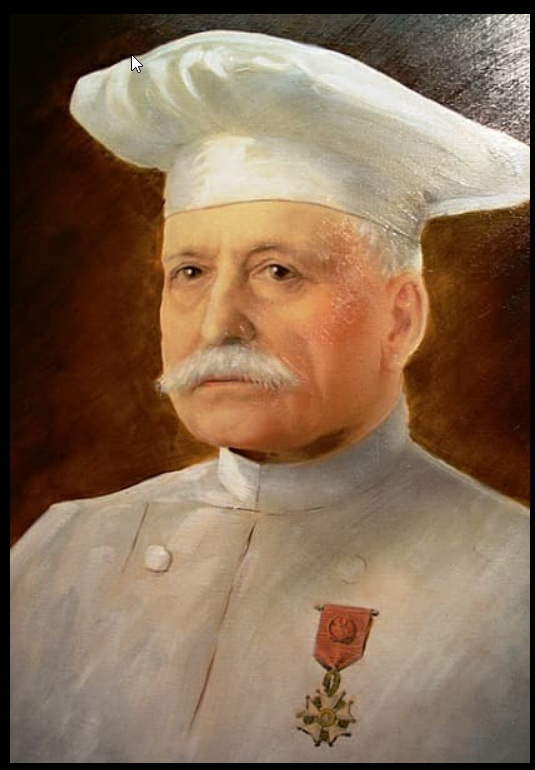
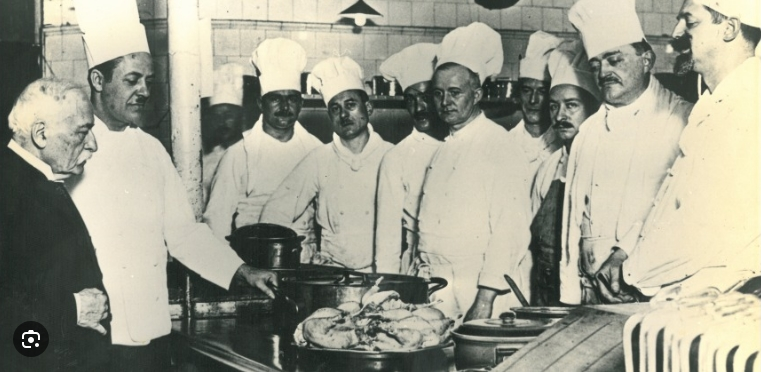
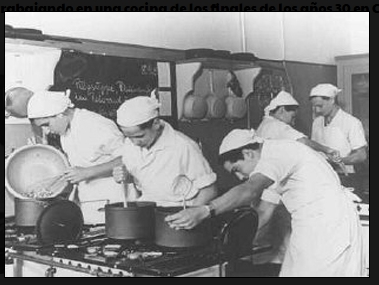
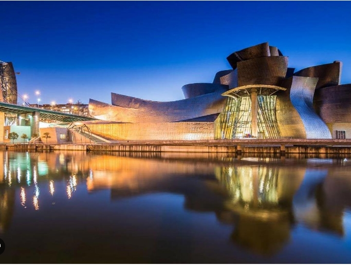
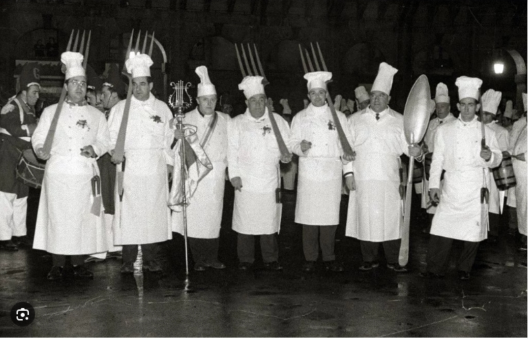

Sociedad Gastronómica y Cultural de Bilbao
Nuestra Historia
Fundada hace más de 100 años, nuestra sociedad gastronómica y cultural tiene como misión promover la cultura culinaria y el intercambio cultural. A lo largo de los años, hemos organizado eventos, talleres y concursos que han unido a personas con pasión por la cocina y el patrimonio cultural.
Hitos en Nuestra Historia
- 1923 - Fundación de la sociedad por Patxi Bibotehaundietxea Oriobeitia.
- 1924 - Primer evento gastronómico oficial, donde se presentó la receta del famoso estofado.
- 1973 - Celebración del 50º aniversario con miembros y amigos.
- 2000 - Inauguración de la nueva sede en el casco antiguo de Bilbao.
- 2023 - Celebración del centenario de la sociedad con eventos especiales.
Momentos Memorables

Fundador de la sociedad Patxi Bibotehaundietxea Oriobeitia.

Primer evento gastronómico oficial, donde se presentó la receta de nuestro famoso estofado, 1924.

Celebración del 50º aniversario, una reunión especial para nuestros miembros y amigos.

Inauguración de la nueva sede en el casco antiguo de Bilbao, 2000.

Celebración del centenario de la sociedad con eventos especiales, 2023.